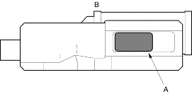

- Remove the ATF feed pipes from the main valve body, secondary valve body, servo body and lock-up valve body.
- Remove the ATF strainer (one bolt).
- Remove the servo body (eight bolts), then remove the separator plate.
- Remove the secondary valve body (three bolts) and stop shaft bracket, then remove the separator plate and dowel pins (two).
- Remove the lock-up valve body (seven bolts), then remove the separator plate and dowel pins (two).
- Remove the regulator valve body (one bolt) and dowel pins (two).
- Remove the torque converter check valve and spring.
- Remove the cooler relief valve spring and cooler relief valve.
- Remove the stator shaft and stator shaft stop.
- Unhook the detent spring from the detent arm, then remove the detent arm shaft,detent arm and control shaft.
- Remove the main valve body (five bolts).
- Remove the ATF pump driven gear shaft, then remove the ATF pump gears.
- Remove the main separator plate and dowel pins (two).
- Clean the inlet opening (A) of the ATF strainer (B) thoroughly with compressed air, then check that it is in good condition and that the inlet opening is not clogged.

- Test the ATF strainer by pouring clean ATF through the inlet opening and replace it if it is clogged or damaged.
- Clean the filter part on the 105.8 mm ATF feed pipe and the 138.8 mm pipe thoroughly with compressed air.
- Check that the filters are not clogged and that the opening is not damaged. Replace the feed pipe if the filter is clogged or damaged.